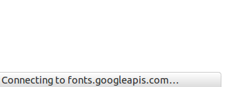

如何优雅的使用Google Fonts API
在介绍优雅地使用方法之前，简单提下 Google Fonts API 使用背景，算是对自己刚入门的知识做个总结把。
关于 Google Fonts API
大部分中文网页都有这样一个字体表：
1 | article { |
这个字体表的作用是，告诉浏览器网页的最佳中文字体顺序。比如从 vista 开始的 Win 系系统，都内置了 Microsoft YaHei，打开网页后由于没有第一款字体，网页会以雅黑字体显示中字。
但是 vista 之前的系统，默认不包含上述三款中任何一款中文字体，就会以第四个，系统默认字体——也就是 中易宋体（在 Windows 里显示名称为 宋体，英文名 SimSun）——显示中字。
还要考虑到用户使用 MAC、Linux、IOS、Android 等设备浏览页面的显示效果，可见网页的字体显示是一件耗时耗力还很难做到完美的事情。
但是有聪明的人想到了出能一举统一文字显示效果的方法——在网页中内嵌字体，这样就保证了网页在各个平台上一致的文字效果。但带来的问题是一个几 MB 大小的字体文件会严重拖慢网页载入速度，甚至在较差的网络环境下会慢的无法忍受。
在这样的矛盾情况下谷歌公司推出了一个为网站提供高质量字体的通用解决方案， Google Fonts API。说的简单点就是免费提供谷歌水准的美观字体，提供谷歌数据中心的带宽加快字体缓存，并以谷歌服务的用户量提高字体缓存的复用率。在保证网站文字的显示质量同时，又最大可能避免影响网站载入速度。
关于优雅
看到这里可能有人会想，这么优雅的一个 API，我怎么用都挺优雅，还用得着你来教？
所以本文有一个前提——有一堵墙。
6 月开始很多网站开始开始出现了神奇的白屏，角落里有这样一行字

因为谷歌一系列服务被某墙屏蔽，在墙内使用了 Google Fonts API 的网站会出现长时间等待连接谷歌服务器的现象，严重拖慢网站载入速度。
偶然在 知乎 看到了 @高潮，。 提供的解决方案，整理后如下：
1. 最方便的方式
使用国内的字体加速方案 - 360网站卫士推出google字体加速方案
360网站卫士常用前端公共库CDN服务
这个方法比较简单，比如你原来 CSS 中使用这个字体
1 | @import url(http://fonts.googleapis.com/css?family=Galdeano); |
我们只要替换 fonts.googleapis.com 为 360网站卫士 提供的 fonts.useso.com 即可。重新打开网站，是不是打开速度已经正常了？
比较谨慎的方式
步骤一：翻墙后，正常挑选字体，然后获取代码，我举例来说，比如
1 | <link href='http://fonts.googleapis.com/css?family=Kavoon' rel='stylesheet' type='text/css'> |
步骤二：在 IE浏览器中（很重要） 直接访问地址可以得到 css 文件：
1 | @font-face { |
可以看到，有 eot/woff 两个文件。
步骤三：将他们下载并上传到你的服务器，然后修改 css 代码中的字体地址，再保存 css 并调用它就可以了。
但是还没完呢！为什么我提到要用 IE 打开呢？因为访问的地址是可以根据浏览器来判断、加载不同 css 以加载不同格式的字体，如果你用 opera 打开：
1 | @font-face { |
比较一下，src 的内容是不同的。前面提供的是 eot 和 woff ，这儿是 ttf。
于是，按照步骤三的方法，把 ttf 文件也同样操作，并在刚才的 css 文件中加入它。
最后得到的是：
1 | @font-face { |
Done.